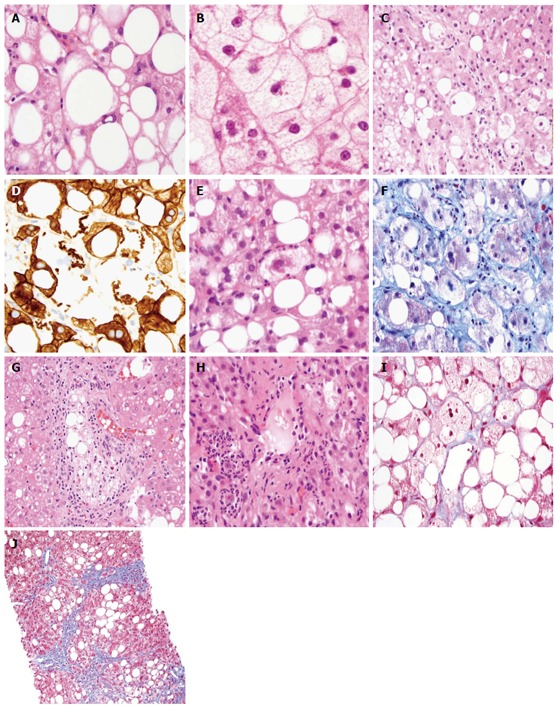
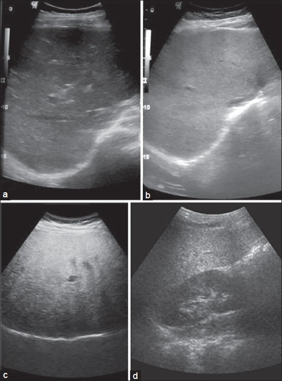

定義與定位
這個病是什麼？在分類樹的哪個位置？跟隔壁的病靠什麼分開？
| 項目 | 重點 |
|---|---|
| 本質 | 肝細胞內三酸甘油酯過度堆積（組織學門檻 >5% 肝細胞脂肪變性），源頭是胰島素阻抗 |
| 好發族群 | 中年、中央型肥胖、T2DM、血脂異常；全球盛行率約 30%（近年區間估計可達 35–38%，且逐年上升），是最常見的慢性肝病 |
| 分類位置 | 脂肪性肝病（SLD）大傘之下，與 MetALD、酒精性肝病並列 |
| 疾病譜 | 單純脂肪肝（steatosis）→ MASH → 纖維化 F1–F3 → Cirrhosis（F4）→ HCC↗ |
| 比例 | MASLD 成人中約 20–30% 已是 MASH；在 T2DM 或重度肥胖族群可逼近 50% |
| 類別 | 條件 | 每週酒精量（男／女） |
|---|---|---|
| MASLD | 脂肪肝 ＋ ≥1 項心代謝危險因子 | <210 g／<140 g |
| MetALD（新增的中間類別） | 脂肪肝 ＋ ≥1 項心代謝危險因子 ＋ 中量飲酒 | 210–420 g／140–350 g |
| 酒精性肝病（ALD） | 飲酒量超過上限 | >420 g／>350 g |
換算成每日約為男 30–60 g、女 20–50 g。男女門檻不同，且判斷 MetALD 需要量化飲酒史，不能只問「有沒有喝」。
心代謝危險因子（符合任一項即可）
| # | 面向 | 門檻 |
|---|---|---|
| 1 | 肥胖／中央肥胖 | BMI ≥25（亞洲族群 ≥23）或腰圍 男 >94 cm／女 >80 cm（須依族群調整；華人／台灣用 男 ≥90 cm／女 ≥80 cm） |
| 2 | 血糖異常 | 空腹血糖 ≥100 mg/dL、2 小時負荷後血糖 ≥140 mg/dL、HbA1c ≥5.7%、已診斷 T2DM 或正在治療 |
| 3 | 血壓 | ≥130/85 mmHg 或正在服用降壓藥 |
| 4 | 三酸甘油酯 | TG ≥150 mg/dL 或正在治療 |
| 5 | HDL 膽固醇 | 男 **≤**40 mg/dL、女 **≤**50 mg/dL 或正在治療（含等於，與代謝症候群的「<」不同） |
病因與機制
為什麼會發生？病生理鏈條長什麼樣？
flowchart TD A["胰島素阻抗<br/>熱量長期過剩"] --> B["脂肪組織脂解增加<br/>游離脂肪酸湧入肝臟"] A --> C["肝臟從頭脂肪合成增加"] B --> D["肝細胞三酸甘油酯堆積<br/>單純脂肪肝"] C --> D D --> E["脂毒性與氧化壓力<br/>粒線體功能失常"] E --> F["發炎與肝細胞氣球樣變性<br/>即 MASH"] F --> G["星狀細胞活化<br/>纖維化 F1 至 F4"] G --> H["肝硬化與肝細胞癌"] classDef key fill:#263238,stroke:#000,color:#fff,font-weight:bold class G key

MASH／NASH 的組織學光譜：A 大、小泡性 steatosis；C ballooned hepatocyte；E–F Mallory–Denk body；G lobular lipogranuloma；I trichrome 下 delicate perisinusoidal／pericellular fibrosis；J bridging fibrosis。診斷 steatohepatitis 的核心仍是 steatosis、lobular inflammation 與 hepatocyte ballooning 的組合，影像無法直接判斷。Source: Histopathology of nonalcoholic fatty liver disease, Fig. 1。臨床表現
典型病人長什麼樣？
- 典型：絕大多數無症狀，多在健康檢查做腹部超音波、或發現肝功能異常時被找到
- 提示性：疲倦、右上腹悶脹（見 RUQ pain）、肝腫大；生化上常見 ALT 略高於 AST（一旦走到肝硬化才會反轉成 AST > ALT）
- 少見但重要：第一次表現就是 Cirrhosis 的併發症（腹水、靜脈曲張出血、Hepatic encephalopathy）或 HCC↗——因為整段過程完全無聲
→ 相關主訴流程：RUQ pain
診斷
把「脂肪」「發炎」「纖維化」三件事拆開問——每個工具只回答其中一個問題。
| 要回答的問題 | 能回答的工具 | 備註 |
|---|---|---|
| 有沒有脂肪堆積？ | Abdominal ultrasound↗、CT、CAP（FibroScan 附帶）、MRI-PDFF | MRI-PDFF 定量最準 |
| 有沒有發炎與氣球樣變性（＝MASH）？ | 只有 Liver biopsy↗ | 影像與抽血都測不到「細胞長什麼樣」；單一抽血項目無法診斷 MASH；可用的是複合分數（FAST、MAST、ELF、NIS4）——它們辨識的是「at-risk MASH」，可作為用藥依據，但組織學診斷（ballooning ＋ lobular inflammation）仍只有切片能給 |
| 纖維化到第幾期？ | FIB-4／NFS → VCTE（FibroScan）／MRE → 切片 | 非侵入性評估已是第一線分流工具 |
超音波看得出什麼、看不出什麼
| 看得出 | 看不出 |
|---|---|
| 脂肪浸潤：肝腎回音對比增強、深部回音衰減、肝內血管邊界模糊 | 輕度脂肪肝（<20–30%）——敏感度差，可能報成正常 |
| 敏感度隨脂肪比例上升：中重度脂肪變性敏感度約 85%、特異度約 93% | 有沒有發炎（MASH）——完全做不到 |
| 肝硬化的形態學：肝表面不平整、實質粗糙、脾腫大、腹水 | 纖維化到第幾期——要靠彈性造影或切片 |

脂肪肝超音波分級：a 正常肝回音；b grade 1，肝回音增強；c grade 2，門靜脈分支壁逐漸被高回音肝實質「洗掉」；d grade 3，深部衰減使橫膈輪廓也變模糊。判讀時要確認 gain 設定並比較肝臟與右腎皮質，否則「亮」本身沒有基準。Source: Imaging of non alcoholic fatty liver disease, Fig. 2。鑑別診斷
看到脂肪肝，不能直接跳到「代謝」。
| 要排除的 | 支持它的線索 | 怎麼排除 |
|---|---|---|
| 酒精性肝病／MetALD | 飲酒量超過門檻；AST/ALT >2、GGT 上升、MCV 上升 | 量化飲酒史（男 210 g／女 140 g 每週為分界） |
| Hepatitis C↗ | genotype 3 可直接造成脂肪變性 | Anti-HCV ＋ HCV RNA |
| Hepatitis B↗ | 台灣盛行率高，常與脂肪肝並存 | HBsAg |
| 藥物性 | methotrexate、tamoxifen、glucocorticoid、amiodarone、valproate、部分抗反轉錄病毒藥 | 完整用藥史；停藥後追蹤 |
| Wilson disease↗ | 年輕、神經精神症狀、Kayser-Fleischer ring、Coombs 陰性溶血 | ceruloplasmin 低、24 小時尿銅高 |
| 自體免疫性肝炎 | 女性、合併其他自體免疫疾病、球蛋白高 | ANA、anti-smooth muscle antibody、IgG |
| 其他 | 血色素沉著症、α1-antitrypsin deficiency、乳糜瀉、甲狀腺功能低下、脂肪失養症 | ferritin／transferrin saturation、TSH 等 |
治療
| 情境 | 處置 |
|---|---|
| 所有病人的基石 | 減重與運動：熱量赤字／地中海飲食、每週 150–300 分鐘中強度有氧 ＋ 阻力訓練；限制含糖飲料與酒精 |
| 減重的階梯目標 | 3–5% → 肝脂肪下降；7–10% → 發炎改善、MASH 消退；≥10% → 才可能改善纖維化 |
| 心血管風險（必做） | 依 ASCVD 風險給 Statin、控制血壓血糖、戒菸——見 CAD |
| 合併 T2DM 且有 MASH | 優先選 GLP-1 receptor agonist（semaglutide）或 pioglitazone |
| MASH ＋ F2–F3（切片證實，或非侵入性評估等同 F2–F3） | resmetirom（甲狀腺素受體 β 促效劑，2024 年 FDA 加速核准，第一個 MASH 適應症藥物）；semaglutide 2.4 mg（2025 年 8 月 FDA 加速核准，適應症為非肝硬化 MASH 併中至重度纖維化 F2–F3，須併飲食與運動；第一個獲此適應症的 GLP-1） |
| 非糖尿病、非肝硬化、切片證實 MASH | 維生素 E 800 IU／天可考慮（代價見下） |
| 病態性肥胖 | 減重手術，代謝效益最持久 |
| 已達肝硬化 | 依 Cirrhosis 處理；上述 MASH 藥物不適用於失代償期 |
併發症與預後
- 要盯的併發症：Cirrhosis 及其併發症（腹水見 Ascitic fluid analysis、靜脈曲張出血、Hepatic encephalopathy、Jaundice）、HCC↗、CAD 與 ACS、T2DM、慢性腎病（進展到 Dialysis）、大腸癌等肝外惡性腫瘤
- 與病毒性肝炎不同的一點：MASLD 相關的 HCC 可以在尚未達到肝硬化時就發生，因此篩檢對象不像 Hepatitis C↗ 或酒精性肝病那樣能用「有沒有肝硬化」乾淨切開（Hepatitis B↗ 也有非肝硬化 HCC，但機轉是病毒 DNA 整合，不同來源）
- 可逆性：單純脂肪肝與早期纖維化在有效減重後可以退回去；已建立的肝硬化不可逆——這是介入要趁早的理由
禁忌與陷阱
相關連結
- Cirrhosis — 走到終點之後的完整機制與併發症全寫在那裡
- HCC↗ — MASLD 可在未達肝硬化前發生，篩檢策略因此棘手
- Metabolic syndrome — 危險因子清單的本體，兩端可互推
- T2DM — 同時是危險因子、共病與進展加速器
- CAD、ACS — 這群病人真正的頭號死因
- Statin — 在 MASLD 不是禁忌，是標準用藥
- Abdominal ultrasound↗ — 能回答與不能回答的問題
- Hepatitis B↗、Hepatitis C↗ — 必須釐清，也可能與 MASLD 共存
- GLP-1 receptor agonist — 合併 T2DM 或 MASH F2–F3 的首選藥物
- 禁忌選項 — 「所有病人都需要」「完全沒有副作用」這類絕對化敘述的通則